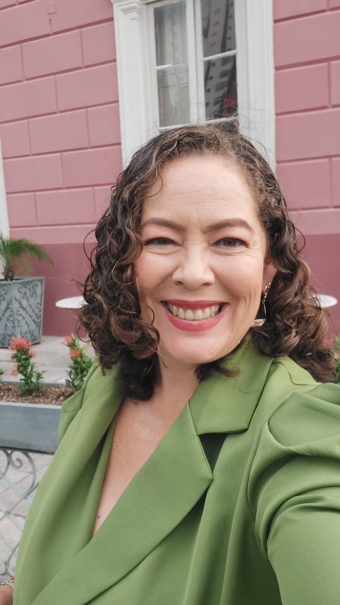

Profa. Dra. Mônica Costa
Doutora em Educação em Ciências e Matemática pela REAMEC. Pesquisa currículo, estágio, formação de professores e Amazônia na perspectiva pós-estruturalista. Professora/pesquisadora da Universidade do Estado do Amazonas.
Currículo Lattes